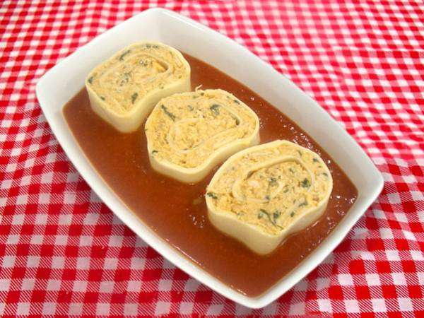
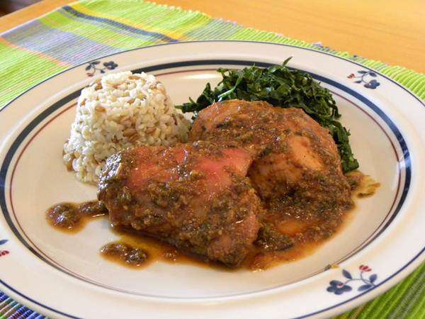

Receita de Rondelli de Frango

ingredientes
- 2 xícaras (chá) de frango cozido e desfiado
- 150g de Cream Cheese Light
- 2 colheres (sopa) de uvas-passas claras
- 2 colheres (sopa) de leite
- Sal (a gosto)
- 200g de massa fresca para lasanha
- 1 colher (sopa) de manjericão picado
- 2 colheres (sopa) de azeite
- 2 dentes de alho picados
- 2 latas de tomate pelado picado
- 1 colher (sopa) de mostarda
- Pimenta calabresa e noz-moscada (a gosto)
- queijo parmesão ralado para servir
Modo de preparo
- Em uma tigela, misture o frango, o Cream Cheese Light,
as uvas-passas, o leite e o sal. Espalhe bem esse recheio sobre a massa de lasanha.
- Apenas deixe uma borda sem recheio na parte de cima da massa para enrolar.
- O próximo passo é cortar os rolos recheados em rodelas de 3cm. Reserve.
- Em uma panela, aqueça o azeite e frite o alho. Junte tomate pelado, mostarda,
pimenta calabresa, noz-moscada e sal.
- Deixe o molho apurar, em fogo baixo, por 5 minutinhos,
mexendo de vez em quando.
- Coloque uma porção do molho em um refratário e disponha os rondelis,
deixando a parte cortada virada pra cima.
- Despeje o restante do molho por cima e leve
ao forno preaquecido em temperatura média,
coberto com papel-alumínio, por 30 minutos.
- Sirva a seguir, polvilhado com queijo parmesão ralado.
Frango marinado na cerveja

ingredientes
- 1 kg de coxa com sobrecoxa de frango
- 2 dentes de alho amassados
- 2 colheres (chá) de sal
- 1 unidade de cebola picada
- 1/2 lata de cerveja
- Pimenta-do-reino branca a gosto
Modo de preparo
- Amasse e misture bem o alho, o sal e a pimenta-do-reino.
- Coloque em um recipiente e misture os pedaços de frango, a cerveja e a cebola.
- Deixe descansar por 1 hora.
- Depois, distribua o frango em uma assadeira, reque com um pouco de molho e leve ao forno pré-aquecido por 20 minutos.
- Então, vire os pedaços de frango, regue novamente com o molho e asse até dourar.
- Sirva em seguida!.